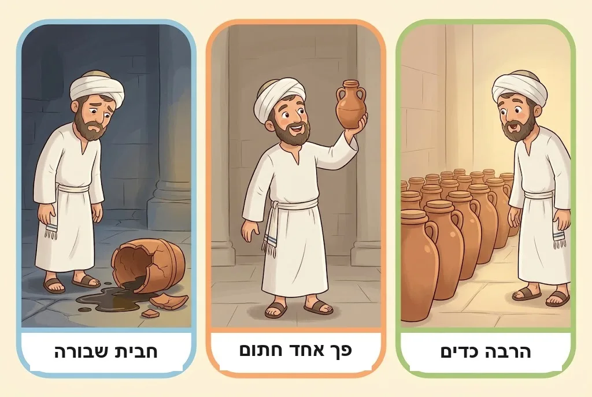
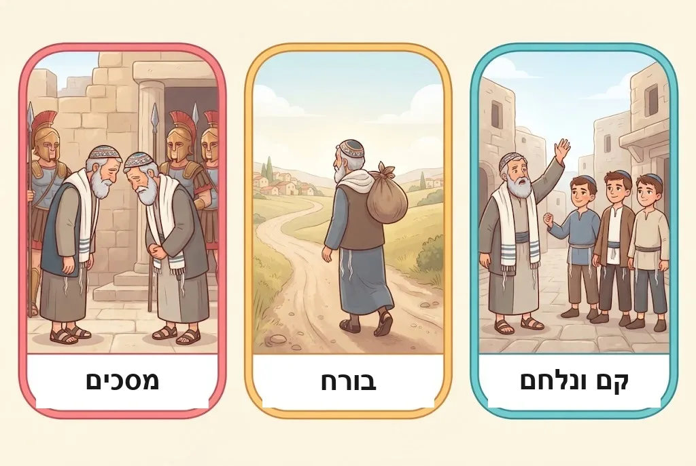
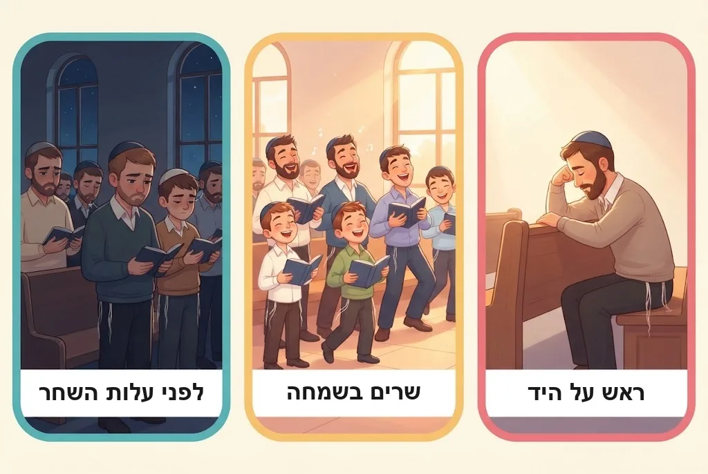
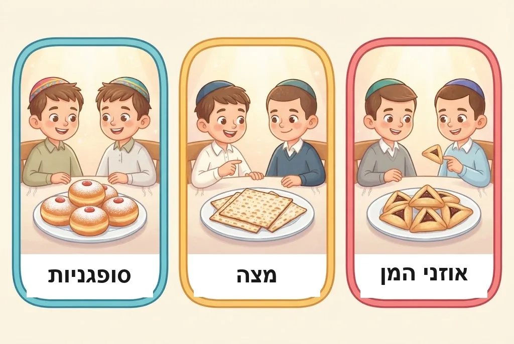

עֶרֶב חֹרֶף. בַּחוּץ חָשׁוּךְ וְקַר, וְהַיָּרֵחַ כִּמְעַט לֹא נִרְאֶה. וּפִתְאֹם, בְּחַלּוֹן אַחַר חַלּוֹן, נִדְלָקִים אוֹרוֹת קְטַנִּים וְחַמִּים. הִגִּיעָה חֲנֻכָּה! מֵאֵיפֹה הִגִּיעוּ הַנֵּרוֹת הָאֵלֶּה? מָה קָרָה לִפְנֵי יוֹתֵר מֵאַלְפַּיִם שָׁנָה בְּבֵית הַמִּקְדָּשׁ? וּמָה אֲנַחְנוּ עוֹשִׂים בִּשְׁמוֹנַת הַיָּמִים הָאֵלֶּה, חוּץ מִלְּהַדְלִיק נֵרוֹת? בּוֹאוּ נִלְמַד.
1נֵס פַּךְ הַשֶּׁמֶן
כְּשֶׁהַיְּוָנִים נִכְנְסוּ לַהֵיכָל, הֵם טִמְּאוּ אֶת כָּל הַשְּׁמָנִים. הַחַשְׁמוֹנָאִים נִצְּחוּ אוֹתָם, חִפְּשׂוּ – וּמָצְאוּ רַק פַּךְ אֶחָד קָטָן שֶׁל שֶׁמֶן, חָתוּם בְּחוֹתָמוֹ שֶׁל הַכֹּהֵן הַגָּדוֹל. הָיָה בּוֹ שֶׁמֶן לְיוֹם אֶחָד בִּלְבַד – וְנַעֲשָׂה נֵס, וְהַמְּנוֹרָה דָּלְקָה מִמֶּנּוּ שְׁמוֹנָה יָמִים. בַּשָּׁנָה שֶׁאַחֲרֵי כֵן קָבְעוּ חֲכָמִים אֶת שְׁמוֹנַת הַיָּמִים הָאֵלֶּה לְיָמִים טוֹבִים שֶׁל הַלֵּל וְהוֹדָאָה.
🤔 לָמָּה? חֲכָמִים רָצוּ שֶׁבְּכָל שָׁנָה נִזְכֹּר אֶת הַנֵּס וְנוֹדֶה לַה׳ עָלָיו – וְלָכֵן קָבְעוּ אֶת הַיָּמִים הָאֵלֶּה לְדוֹרוֹת.
💛 פַּךְ קָטָן אֶחָד – וְאוֹר שֶׁל שְׁמוֹנָה יָמִים! כְּשֶׁאֲנַחְנוּ עוֹשִׂים אֶת שֶׁלָּנוּ בְּמָסִירוּת, ה׳ מוֹסִיף בְּרָכָה מֵעַל הַטֶּבַע.
(פֶּרֶק י״א, הֲלָכָה א׳)

2רַק חֲנֻכָּה נִשְׁאֲרָה
בִּימֵי בֵּית הַמִּקְדָּשׁ הַשֵּׁנִי הָיוּ עוֹד הַרְבֵּה יָמִים טוֹבִים שֶׁל תּוֹדָה עַל נִצְחוֹנוֹת, וְכֻלָּם נִכְתְּבוּ בְּסֵפֶר שֶׁנִּקְרָא ״מְגִלַּת תַּעֲנִית״ – לְמָשָׁל ״יוֹם נִיקָנוֹר״ בְּי״ג בַּאֲדָר. אַחֲרֵי חֻרְבַּן הַבַּיִת הַשֵּׁנִי, כָּל הַיָּמִים הָאֵלֶּה בָּטְלוּ. רַק חֲנֻכָּה נִשְׁאֲרָה לְכָל הַדּוֹרוֹת.
🤔 לָמָּה? חֲנֻכָּה נִשְׁאֲרָה בִּזְכוּת נֵס פַּךְ הַשֶּׁמֶן, וּבִזְכוּת הַמִּצְוָה לְהַדְלִיק נֵרוֹת כְּדֵי לְפַרְסֵם אוֹתוֹ. וּמִכֵּיוָן שֶׁמַּדְלִיקִים נֵרוֹת, נִשְׁאֲרוּ גַּם ״עַל הַנִּסִּים״, הַהַלֵּל וְהָאִסּוּר לְהִתְעַנּוֹת.
(פֶּרֶק י״א, הֲלָכָה א׳, הֲלָכָה ה׳)
3יָוָן וְהַמִּתְיַוְּנִים
לַיְּוָנִים הָיְתָה תַּרְבּוּת חֲזָקָה שֶׁל מַדָּע, אָמָּנוּת וּסְפּוֹרְט. אֲלֶכְּסַנְדֶּר מוֹקְדוֹן כָּבַשׁ אֲרָצוֹת רַבּוֹת, וְגַם אֶת אֶרֶץ יִשְׂרָאֵל, וְהַתַּרְבּוּת הַיְּוָנִית הִתְפַּשְּׁטָה בְּכָל מָקוֹם. גַּם בִּיהוּדָה הָיוּ יְהוּדִים שֶׁחִקּוּ אֶת הַיְּוָנִים – ״הַמִּתְיַוְּנִים״. הֵם בָּנוּ לְיַד בֵּית הַמִּקְדָּשׁ אִצְטַדְיוֹן לְתַחֲרוּיוֹת הֵאָבְקוּת, וְהֶעְדִּיפוּ לִצְפּוֹת בַּתַּחֲרוּיוֹת מֵאֲשֶׁר בַּעֲבוֹדַת הַקָּרְבָּנוֹת.
🤔 לָמָּה? הַיְּהוּדִים הָיוּ שׁוֹנִים מִשְּׁאָר הָעַמִּים, וְלָכֵן הַהִתְיַוְּנוּת הִתְקַדְּמָה אֶצְלָם לְאַט. אֲבָל בְּמֶשֶׁךְ הַשָּׁנִים הִיא הִשְׁפִּיעָה עַל רַבִּים, בְּעִקָּר עַל הָעֲשִׁירִים.
💛 יֵשׁ דְּבָרִים יָפִים בָּעוֹלָם – אֲבָל הַתּוֹרָה שֶׁל ה׳ הִיא הַלֵּב שֶׁלָּנוּ, וְשׁוּם מִשְׂחָק לֹא יַחְלִיף אוֹתָהּ.
(פֶּרֶק י״א, הֲלָכָה ב׳)
4הַגְּזֵרוֹת וּמַתִּתְיָהוּ
אַנְטִיּוֹכוּס, מֶלֶךְ יָוָן, גָּזַר עַל הַיְּהוּדִים לַעֲזֹב אֶת הַתּוֹרָה וְלַעֲבֹד עֲבוֹדָה זָרָה. הוּא אָסַר לִשְׁמֹר מִצְווֹת וְלַעֲשׂוֹת בְּרִית מִילָה, שָׂרַף סִפְרֵי תּוֹרָה, וְהָפַךְ אֶת בֵּית הַמִּקְדָּשׁ לִמְקוֹם עֲבוֹדָה זָרָה. כְּשֶׁהַיְּוָנִים הִגִּיעוּ לַכְּפָר מוֹדִיעִין וְרָצוּ לְהַכְרִיחַ אֶת מַתִּתְיָהוּ בֶּן יוֹחָנָן הַכֹּהֵן לַעֲבֹד עֲבוֹדָה זָרָה – קָם מַתִּתְיָהוּ וְנִלְחַם בָּהֶם, וְיַחַד עִם בָּנָיו הֵרִים אֶת דֶּגֶל הַמֶּרֶד.
🤔 לָמָּה? רַבִּים מָסְרוּ אֶת נַפְשָׁם עַל קִדּוּשׁ ה׳. הַחִדּוּשׁ שֶׁל מַתִּתְיָהוּ הָיָה שֶׁהוּא לֹא חִכָּה לָאוֹיֵב – הוּא יָצָא לְהִלָּחֵם בּוֹ.
💛 מַתִּתְיָהוּ וּבָנָיו אָהֲבוּ אֶת ה׳ וְאֶת הַתּוֹרָה יוֹתֵר מִכָּל דָּבָר – וְהָאַהֲבָה הַזֹּאת נָתְנָה לָהֶם אֹמֶץ.
(פֶּרֶק י״א, הֲלָכָה ג׳)

5יְהוּדָה הַמַּכַּבִּי וְטָהֳרַת הַמִּקְדָּשׁ
יְהוּדָה הַמַּכַּבִּי, הַגִּבּוֹר מִבְּנֵי מַתִּתְיָהוּ, הִנְהִיג אֶת הַלּוֹחֲמִים. בִּגְבוּרָה וּבְחָכְמָה נִצְּחוּ הַחַשְׁמוֹנָאִים אֶת צִבְאוֹת יָוָן, וְאַחֲרֵי כִּשְׁנָתַיִם כָּבְשׁוּ אֶת יְרוּשָׁלַיִם. בְּכ״ה בְּכִסְלֵו הִתְחִילוּ לְטַהֵר אֶת בֵּית הַמִּקְדָּשׁ וּלְהַחְזִיר אֶת עֲבוֹדַת הַקָּרְבָּנוֹת – וְאָז הָיָה נֵס פַּךְ הַשֶּׁמֶן. הַמִּלְחָמָה נִמְשְׁכָה עוֹד עֶשְׂרוֹת שָׁנִים, עַד שֶׁיְּהוּדִים שָׁלְטוּ שׁוּב בְּאֶרֶץ יִשְׂרָאֵל.
🤔 לָמָּה? נִדְמֶה הָיָה שֶׁגַּם יְהוּדָה תִּתְיַוֵּן בַּסּוֹף, כְּמוֹ כָּל הָעַמִּים. אֲבָל ה׳, שֶׁמַּנְהִיג אֶת הָעוֹלָם בַּסֵּתֶר, הֵבִיא אֶת הַמִּלְחָמָה – וּמִתּוֹכָהּ הִתְגַּלְּתָה הָאֱמוּנָה וְהַגְּבוּרָה שֶׁל עַם יִשְׂרָאֵל.
(פֶּרֶק י״א, הֲלָכָה ג׳)
6הַתּוֹרָה נִשְׁאֲרָה לָנֶצַח
בִּזְכוּת הַנִּצָּחוֹן הִתְפַּשְּׁטוּ הַיְּהוּדִים בְּכָל אֶרֶץ יִשְׂרָאֵל, יְהוּדִים עָלוּ מִחוּץ לָאָרֶץ, וּבָתֵּי הַמִּדְרָשׁ פָּרְחוּ. בְּאוֹתָם יָמִים הֻנַּח הַיְּסוֹד שֶׁל הַתּוֹרָה שֶׁבְּעַל פֶּה, שֶׁשָּׁמְרָה עָלֵינוּ בְּאַלְפַּיִם שְׁנוֹת גָּלוּת. מַלְכוּת הַחַשְׁמוֹנָאִים לֹא נִמְשְׁכָה, וּבֵית הַמִּקְדָּשׁ הַשֵּׁנִי נֶחְרַב – אֲבָל הַתּוֹרָה נִשְׁאֲרָה.
🤔 לָמָּה? נֵס פַּךְ הַשֶּׁמֶן מְלַמֵּד שֶׁהַתּוֹרָה מְאִירָה גַּם בַּחֹשֶׁךְ, מֵעַל לְכֹחוֹת הַטֶּבַע – וְשֶׁאֶת עַם יִשְׂרָאֵל אִי אֶפְשָׁר לְהַכְנִיעַ.
💛 הָאוֹר שֶׁל הַתּוֹרָה הוֹלֵךְ וּמֵאִיר, עַד שֶׁנִּזְכֶּה לְהַדְלִיק שׁוּב אֶת מְנוֹרַת בֵּית הַמִּקְדָּשׁ בְּשֶׁמֶן טָהוֹר מִזֵּיתֵי אֶרֶץ יִשְׂרָאֵל.
(פֶּרֶק י״א, הֲלָכָה ד׳, הֲלָכָה ה׳)
7אוֹר בְּתוֹךְ הַחֹשֶׁךְ
חֲנֻכָּה חָלָה בַּלֵּילוֹת הָאֲרֻכִּים שֶׁל הַחֹרֶף. קַר בַּחוּץ, וְגַם הַיָּרֵחַ כִּמְעַט לֹא מֵאִיר, כִּי חֲנֻכָּה קְרוֹבָה לְרֹאשׁ חֹדֶשׁ. וּבְדִיּוּק אָז, כְּשֶׁהַשֶּׁמֶשׁ שׁוֹקַעַת וְהַחֹשֶׁךְ מִתְפַּשֵּׁט, יְהוּדִים מַדְלִיקִים נֵרוֹת. כִּמְעַט אֵין יְהוּדִי שֶׁאֵינוֹ מַדְלִיק נֵרוֹת חֲנֻכָּה.
🤔 לָמָּה? הַנֵּרוֹת מְסַמְּלִים אֶת הָאֱמוּנָה שֶׁל יִשְׂרָאֵל: גַּם בַּזְּמַנִּים הֲכִי חֲשׁוּכִים לֹא הִתְיָאַשְׁנוּ, וְהִמְשַׁכְנוּ לִלְמֹד וּלְלַמֵּד תּוֹרָה. וַחֲנֻכָּה הִיא הַשִּׂמְחָה שֶׁל הַתּוֹרָה שֶׁבְּעַל פֶּה: חֲכָמִים קָבְעוּ אוֹתָהּ, וּמִצְוַת הַנֵּרוֹת הִיא מֵהַמִּצְווֹת הָרִאשׁוֹנוֹת שֶׁהֵם תִּקְּנוּ.
💛 מְעַט אוֹר דּוֹחֶה הַרְבֵּה חֹשֶׁךְ. גַּם מַעֲשֶׂה טוֹב קָטָן שֶׁלִּי מֵאִיר אֶת הָעוֹלָם.
(פֶּרֶק י״א, הֲלָכָה ו׳)
8מוֹסִיף וְהוֹלֵךְ עַד שְׁמוֹנָה
כָּל יִשְׂרָאֵל נוֹהֲגִים לְהוֹסִיף בְּכָל לַיְלָה נֵר: בַּלַּיְלָה הָרִאשׁוֹן נֵר אֶחָד, וּבַלַּיְלָה הָאַחֲרוֹן – שְׁמוֹנָה נֵרוֹת.
🤔 לָמָּה? כָּל דָּבָר בָּעוֹלָם נֶחֱלָשׁ עִם הַזְּמַן. אֲבָל הָאֱמוּנָה בַּה׳ לֹא נֶחְלֶשֶׁת – הִיא הוֹלֶכֶת וְגוֹבֶרֶת. וְהַמִּסְפָּר שְׁמוֹנָה רוֹמֵז לְמָה שֶׁמֵּעַל הַטֶּבַע: הָעוֹלָם נִבְרָא בְּשִׁבְעָה יָמִים, וּבְרִית הַמִּילָה נַעֲשֵׂית בַּיּוֹם הַשְּׁמִינִי.
💛 בְּכָל יוֹם אֶפְשָׁר לְהוֹסִיף עוֹד ״נֵר״ קָטָן שֶׁל טוּב – וְהָאַהֲבָה לַה׳ הוֹלֶכֶת וּגְדֵלָה.
(פֶּרֶק י״א, הֲלָכָה ז׳)

9״עַל הַנִּסִּים״
בְּכָל יְמֵי הַחֲנֻכָּה מוֹסִיפִים ״עַל הַנִּסִּים״ בִּתְפִלַּת שְׁמוֹנֶה עֶשְׂרֵה, בְּבִרְכַּת ״מוֹדִים״. נוֹהֲגִים לְהוֹסִיף אוֹתוֹ גַּם בְּבִרְכַּת הַמָּזוֹן, בַּבְּרָכָה ״נוֹדֶה לְּךָ״. בַּבְּרָכָה מֵעֵין שָׁלֹשׁ (״עַל הַמִּחְיָה״) לֹא מַזְכִּירִים אֶת חֲנֻכָּה.
🤔 לָמָּה? חֲכָמִים קָבְעוּ אֶת יְמֵי הַחֲנֻכָּה כְּדֵי לְהוֹדוֹת לַה׳ עַל הַיְּשׁוּעָה, וְ״עַל הַנִּסִּים״ הִיא הַתּוֹדָה שֶׁאֲנַחְנוּ אוֹמְרִים בַּתְּפִלָּה.
(פֶּרֶק י״א, הֲלָכָה ח׳)
10שָׁכַחְתִּי ״עַל הַנִּסִּים״
מִי שֶׁשָּׁכַח לוֹמַר ״עַל הַנִּסִּים״ – לֹא חוֹזֵר עַל הַתְּפִלָּה אוֹ עַל בִּרְכַּת הַמָּזוֹן. אִם נִזְכַּר לִפְנֵי שֶׁאָמַר אֶת שֵׁם ה׳ בְּסוֹף הַבְּרָכָה – חוֹזֵר וְאוֹמֵר ״עַל הַנִּסִּים״. וְאִם כְּבָר אָמַר אֶת הַשֵּׁם – מַמְשִׁיךְ, וְטוֹב שֶׁיֹּאמַר ״עַל הַנִּסִּים״ בְּסוֹף הַתְּפִלָּה. וּבְבִרְכַּת הַמָּזוֹן – יֹאמַר אוֹתוֹ בֵּין הַ״הָרַחֲמָן״.
🤔 לָמָּה? בְּסוֹף הַתְּפִלָּה וּבַ״הָרַחֲמָן״ מֻתָּר לְהוֹסִיף בַּקָּשׁוֹת וְהוֹדָאוֹת כְּכָל שֶׁרוֹצִים.
(פֶּרֶק י״א, הֲלָכָה ח׳)
11הַלֵּל שָׁלֵם בְּכָל יוֹם
בְּכָל שְׁמוֹנַת יְמֵי הַחֲנֻכָּה אוֹמְרִים הַלֵּל שָׁלֵם בִּבְרָכָה. אֲפִלּוּ בְּפֶסַח אוֹמְרִים הַלֵּל שָׁלֵם רַק בַּיּוֹם הָרִאשׁוֹן – וּמִכָּאן רוֹאִים כַּמָּה חֲשׁוּבָה חֲנֻכָּה. נָשִׁים וּבָנוֹת פְּטוּרוֹת מֵהַלֵּל, כִּי זוֹ מִצְוָה שֶׁתְּלוּיָה בִּזְמַן. אֲבָל בַּת שֶׁרוֹצָה לוֹמַר הַלֵּל – מְקַיֶּמֶת מִצְוָה. הַאִם הִיא מְבָרֶכֶת?
🤔 לָמָּה? כְּשֶׁיִּשְׂרָאֵל נִגְאָלִים מִצָּרָה גְּדוֹלָה – אוֹמְרִים הַלֵּל, שִׁירַת תּוֹדָה לַה׳ עַל הַיְּשׁוּעָה.
🔀 שְׁנֵי מִנְהָגִים – וּשְׁנֵיהֶם כַּהֲלָכָה
לְמִנְהַג הָאַשְׁכְּנַזִּים וְחֵלֶק מִיּוֹצְאוֹת סְפָרַד מְבָרֶכֶת לִפְנֵי הַהַלֵּל.
לְדַעַת רַבִּים מִפּוֹסְקֵי סְפָרַד אוֹמֶרֶת הַלֵּל בְּלִי בְּרָכָה.
💛 הַהַלֵּל הוּא שִׁיר שֶׁל לֵב שָׂמֵחַ: אֲנַחְנוּ לֹא רַק מְבַקְּשִׁים מֵה׳ – אֲנַחְנוּ גַּם שָׁרִים לוֹ.
(פֶּרֶק י״א, הֲלָכָה ח׳)

12קְרִיאַת הַתּוֹרָה בַּחֲנֻכָּה
בְּכָל יוֹם שֶׁל חֲנֻכָּה קוֹרְאִים בַּתּוֹרָה עַל הַקָּרְבָּנוֹת שֶׁהֵבִיאוּ הַנְּשִׂיאִים בַּחֲנֻכַּת הַמִּשְׁכָּן – נָשִׂיא אֶחָד בְּכָל יוֹם. בַּיּוֹם הַשְּׁמִינִי מַתְחִילִים בַּנָּשִׂיא הַשְּׁמִינִי, וּמְסַיְּמִים בְּפָרָשַׁת הַנֵּרוֹת שֶׁבִּתְחִלַּת פָּרָשַׁת ״בְּהַעֲלֹתְךָ״.
(פֶּרֶק י״א, הֲלָכָה ח׳)
13יְמֵי שִׂמְחָה
יְמֵי הַחֲנֻכָּה הֵם יְמֵי שִׂמְחָה, הַלֵּל וְהוֹדָאָה. לָכֵן אָסוּר לְהִתְעַנּוֹת בָּהֶם, וַאֲפִלּוּ מִי שֶׁנּוֹהֵג לָצוּם בְּיוֹם הַזִּכָּרוֹן שֶׁל אָבִיו אוֹ אִמּוֹ – אִם הוּא חָל בַּחֲנֻכָּה, לֹא צָם. בְּכָל יְמֵי הַחֲנֻכָּה לֹא אוֹמְרִים תַּחֲנוּן וְלֹא ״לַמְנַצֵּחַ״ – לְכָל הַמִּנְהָגִים.
🤔 לָמָּה? חֲכָמִים קָבְעוּ אֶת הַיָּמִים הָאֵלֶּה לְהוֹדוֹת וּלְהַלֵּל לַה׳, וְצוֹם וְעֶצֶב לֹא מַתְאִימִים לְיָמִים שֶׁל תּוֹדָה.
(פֶּרֶק י״א, הֲלָכָה ט׳)
14סְעוּדוֹת בַּחֲנֻכָּה
בְּפוּרִים יֵשׁ מִצְוָה לַעֲשׂוֹת סְעוּדָה, וּבַחֲנֻכָּה אֵין חוֹבָה. בְּכָל זֹאת, לְדַעַת הַרְבֵּה פּוֹסְקִים יֵשׁ מִצְוָה לַעֲשׂוֹת סְעוּדוֹת בַּחֲנֻכָּה, כְּדֵי לִשְׂמֹחַ בַּיְּשׁוּעָה. לְמַעֲשֶׂה נוֹהֲגִים לְהַרְבּוֹת בִּסְעוּדוֹת, וְאוֹמְרִים בָּהֶן דִּבְרֵי תּוֹרָה, שִׁירִים וְתִשְׁבָּחוֹת – וְכָךְ הֵן נַעֲשׂוֹת סְעוּדוֹת מִצְוָה לְכָל הַדֵּעוֹת.
🤔 לָמָּה? בְּפוּרִים הַגְּזֵרָה הָיְתָה לְהַשְׁמִיד אֶת הַגּוּף, וְלָכֵן שְׂמֵחִים גַּם בַּגּוּף, בַּאֲכִילָה. בַּחֲנֻכָּה הַגְּזֵרָה הָיְתָה נֶגֶד הַתּוֹרָה – מִי שֶׁהִתְנַהֵג כְּמוֹ יְוָנִי נִצַּל – וְלָכֵן עִקַּר הַחַג רוּחָנִי: לְהוֹדוֹת וּלְהַלֵּל.
💛 כְּשֶׁאוֹמְרִים דִּבְרֵי תּוֹרָה וְשָׁרִים לַה׳ סְבִיב הַשֻּׁלְחָן – גַּם הָאֹכֶל נַעֲשֶׂה חֵלֶק מֵהַמִּצְוָה.
(פֶּרֶק י״א, הֲלָכָה י׳)
15סֻפְגָּנִיּוֹת, לְבִיבוֹת וּגְבִינָה
נוֹהֲגִים לֶאֱכֹל בַּחֲנֻכָּה מַאֲכָלִים מְטֻגָּנִים בְּשֶׁמֶן, כְּמוֹ סֻפְגָּנִיּוֹת וּלְבִיבוֹת. וְנָהֲגוּ לֶאֱכֹל גַּם מַאַכְלֵי חָלָב וּגְבִינָה.
🤔 לָמָּה? הֶחָלָב מַזְכִּיר אֶת גְּבוּרַת יְהוּדִית בַּת יוֹחָנָן כֹּהֵן גָּדוֹל. הִיא הֶאֱכִילָה אֶת הָאוֹיֵב מַאַכְלֵי חָלָב, וּכְשֶׁנִּרְדַּם – הָרְגָה אוֹתוֹ, וְנַעֲשְׂתָה יְשׁוּעָה לְיִשְׂרָאֵל. הַזִּכָּרוֹן שֶׁל הַגְּבוּרָה שֶׁלָּהּ נָתַן אֹמֶץ לַחַשְׁמוֹנָאִים לִמְרֹד בַּיְּוָנִים.
(פֶּרֶק י״א, הֲלָכָה י׳)

16מִנְהַג הַנָּשִׁים
הַנָּשִׁים נוֹהֲגוֹת לֹא לַעֲשׂוֹת מְלָאכָה בַּחֲצִי הַשָּׁעָה הָרִאשׁוֹנָה שֶׁהַנֵּרוֹת דּוֹלְקִים. הֵן נִמְנָעוֹת מִמְּלָאכוֹת שֶׁאֲסוּרוֹת בְּחֹל הַמּוֹעֵד, כְּמוֹ כְּבִיסָה וּתְפִירָה – אֲבָל לְבַשֵּׁל וּלְטַגֵּן מֻתָּר. יֵשׁ נָשִׁים שֶׁנָּהֲגוּ לְהִמָּנַע מִמְּלָאכָה בְּכָל יְמֵי הַחֲנֻכָּה, וּבְמִיֻחָד בַּיּוֹם הָרִאשׁוֹן וּבַשְּׁמִינִי.
🤔 לָמָּה? שְׁנֵי טְעָמִים: כְּדֵי שֶׁלֹּא יִשְׁתַּמְּשׁוּ בְּטָעוּת בְּאוֹר הַנֵּרוֹת, וּמִפְּנֵי קְדֻשַּׁת הַיָּמִים, שֶׁמִּתְגַּלָּה כְּשֶׁהַנֵּרוֹת דּוֹלְקִים. וְלַנָּשִׁים יֵשׁ זְכוּת מְיֻחֶדֶת בַּחֲנֻכָּה – כִּי מִתּוֹךְ גְּבוּרַת יְהוּדִית וְנָשִׁים אֲחֵרוֹת הִתְחִיל הַנֵּס.
(פֶּרֶק י״א, הֲלָכָה י״א)
📝 מָה לָמַדְנוּ
- בְּכ״ה בְּכִסְלֵו טִהֲרוּ הַחַשְׁמוֹנָאִים אֶת הַמִּקְדָּשׁ, וּפַךְ שֶׁמֶן שֶׁל יוֹם אֶחָד דָּלַק שְׁמוֹנָה יָמִים.
- מַתִּתְיָהוּ וּבָנָיו מָרְדוּ בַּיְּוָנִים, שֶׁגָּזְרוּ עַל הַיְּהוּדִים לַעֲזֹב אֶת הַתּוֹרָה – וְנִצְּחוּ.
- מִכָּל הַיָּמִים הַטּוֹבִים שֶׁל יְמֵי הַבַּיִת הַשֵּׁנִי, רַק חֲנֻכָּה נִשְׁאֲרָה – בִּזְכוּת הַנֵּס וְהַנֵּרוֹת.
- בְּכָל יְמֵי הַחֲנֻכָּה אוֹמְרִים ״עַל הַנִּסִּים״ וְהַלֵּל שָׁלֵם, וְלֹא מִתְעַנִּים וְלֹא אוֹמְרִים תַּחֲנוּן.
- נוֹהֲגִים לְהַרְבּוֹת בִּסְעוּדוֹת עִם דִּבְרֵי תּוֹרָה וְשִׁירִים, וְלֶאֱכֹל מַאַכְלֵי שֶׁמֶן וְחָלָב.
❓ שְׁאֵלוֹת חֲזָרָה
- מָה מָצְאוּ הַחַשְׁמוֹנָאִים בַּמִּקְדָּשׁ, וּמָה הָיָה הַנֵּס?
- לָמָּה מִכָּל הַיָּמִים הַטּוֹבִים שֶׁל יְמֵי הַבַּיִת הַשֵּׁנִי נִשְׁאֲרָה רַק חֲנֻכָּה?
- שָׁכַחְתָּ ״עַל הַנִּסִּים״, וְנִזְכַּרְתָּ אַחֲרֵי שֶׁאָמַרְתָּ אֶת שֵׁם ה׳ בְּסוֹף הַבְּרָכָה. מָה תַּעֲשֶׂה?
🎯 רוֹצִים לִבְדֹּק אֶת עַצְמְכֶם? לַחִידוֹן ״נֵס פַּךְ הַשֶּׁמֶן״
📚 עוֹד חָמְרֵי לִמּוּד עַל הֲלָכָה – חִנָּם, בַּמַּאֲגָר הַקּוֹל הַחֲמִישִׁי: https://www.kol-toda.co.il/halacha/
הַמַּאֲגָר הַמָּלֵא: https://www.kol-toda.co.il/
הַמַּאֲגָר הַמָּלֵא: https://www.kol-toda.co.il/